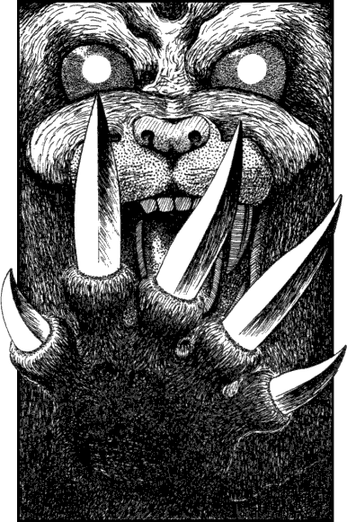

297
You move nearer to the trembling man and try to calm him with soothing words and a promise that you will protect him. You look to the bell and use your Sixth Sense in an attempt to locate the creature, but you can detect nothing unusual. Then you hear a faint gurgling growl and a knot of fear tightens in your throat. Now you can detect a powerful aura of evil. You glance at the cowering cleric and your fear becomes an icy terror when you realize that he is the source of this evil. He continues to plead with you to save him, but then he sees the shock register on your face and he abandons his pretence.
The pupils of his eyes shimmer and become spheres that glow darkly amber and, in a terrifying instant, his body transforms. One moment he is a bearded holy man and, in a split-second blur, he becomes a snarling hulk of black-furred death. With breathtaking speed he leaps at you and slashes at your throat with his razor-sharp talons. Instinct makes you propel yourself backwards to avoid these deadly claws and, as you spring away, you slip and tumble headlong down the spiral stairs.

Pick a number from the Random Number Table.
If the number you have chosen is 0–4, turn to 248.
If it is 5–9, turn to 94.